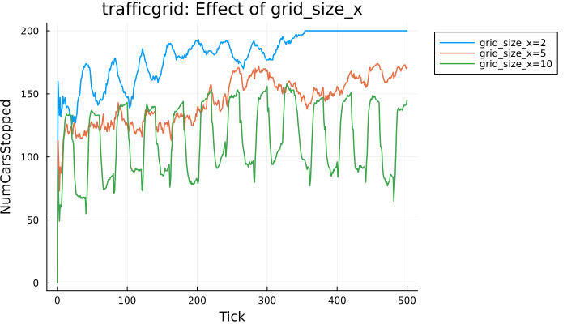

Traffic Grid
Overview
WHAT IS IT?
This is a model of traffic moving in a city grid. It allows you to control traffic lights and global variables, such as the speed limit and the number of cars, and explore traffic dynamics.
Try to develop strategies to improve traffic and to understand the different ways to measure the quality of traffic.
HOW IT WORKS
Each time step, the cars attempt to move forward at their current speed. If their current speed is less than the speed limit and there is no car directly in front of them, they accelerate. If there is a slower car in front of them, they match the speed of the slower car and deccelerate. If there is a red light or a stopped car in front of them, they stop.
There are two different ways the lights can change. First, the user can change any light at any time by making the light current, and then clicking CHANGE LIGHT. Second, lights can change automatically, once per cycle. Initially, all lights will automatically change at the beginning of each cycle.
THINGS TO NOTICE
When cars have stopped at a traffic light, and then they start moving again, the traffic jam will move backwards even though the cars are moving forwards. Why is this?
When POWER? is turned off and there are quite a few cars on the roads, “gridlock” usually occurs after a while. In fact, gridlock can be so severe that traffic stops completely. Why is it that no car can move forward and break the gridlock? Could this happen in the real world?
Gridlock can occur when the power is turned on, as well. What kinds of situations can lead to gridlock?
THINGS TO TRY
Try changing the speed limit for the cars. How does this affect the overall efficiency of the traffic flow? Are fewer cars stopping for a shorter amount of time? Is the average speed of the cars higher or lower than before?
Try changing the number of cars on the roads. Does this affect the efficiency of the traffic flow?
How about changing the speed of the simulation? Does this affect the efficiency of the traffic flow?
Try running this simulation with all lights automatic. Is it harder to make the traffic move well using this scheme than controlling one light manually? Why?
Try running this simulation with all lights automatic. Try to find a way of setting the phases of the traffic lights so that the average speed of the cars is the highest. Now try to minimize the number of stopped cars. Now try to decrease the average wait time of the cars. Is there any correlation between these different metrics?
EXTENDING THE MODEL
Currently, the maximum speed limit (found in the SPEED-LIMIT slider) for the cars is 1.0. This is due to the fact that the cars must look ahead the speed that they are traveling to see if there are cars ahead of them. If there aren’t, they speed up. If there are, they slow down. Looking ahead for a value greater than 1 is a little bit tricky. Try implementing the correct behavior for speeds greater than 1.
When a car reaches the edge of the world, it reappears on the other side. What if it disappeared, and if new cars entered the city at random locations and intervals?
NETLOGO FEATURES
This model uses two forever buttons which may be active simultaneously, to allow the user to select a new current intersection while the model is running.
It also uses a chooser to allow the user to choose between several different possible plots, or to display all of them at once.
HOW TO CITE
If you mention this model or the NetLogo software in a publication, we ask that you include the citations below.
For the model itself:
- Wilensky, U. (2003). NetLogo Traffic Grid model. http://ccl.northwestern.edu/netlogo/models/TrafficGrid. Center for Connected Learning and Computer-Based Modeling, Northwestern University, Evanston, IL.
Please cite the NetLogo software as:
- Wilensky, U. (1999). NetLogo. http://ccl.northwestern.edu/netlogo/. Center for Connected Learning and Computer-Based Modeling, Northwestern University, Evanston, IL.
COPYRIGHT AND LICENSE
Copyright 2003 Uri Wilensky.

This model is licensed under the Creative Commons Attribution-NonCommercial-ShareAlike 3.0 License. To view a copy of this license, visit https://creativecommons.org/licenses/by-nc-sa/3.0/ or send a letter to Creative Commons, 559 Nathan Abbott Way, Stanford, California 94305, USA.
NetLogo itself is free software for non-commercial use under the terms of the GNU General Public License (see full license information here).
To inquire about commercial licenses for either NetLogo or specific models from the models library, please contact netlogo-commercial-admin@ccl.northwestern.edu.
This model was created as part of the projects: PARTICIPATORY SIMULATIONS: NETWORK-BASED DESIGN FOR SYSTEMS LEARNING IN CLASSROOMS and/or INTEGRATED SIMULATION AND MODELING ENVIRONMENT. The project gratefully acknowledges the support of the National Science Foundation (REPP & ROLE programs) – grant numbers REC #9814682 and REC-0126227.
Parameters
| Parameter | Type | Default | Description |
|---|---|---|---|
grid_size_x |
Int |
5 |
grid size x |
grid_size_y |
Int |
5 |
grid size y |
num_cars |
Int |
200 |
num cars |
speed_limit |
Float64 |
1.0 |
speed limit |
ticks_per_cycle |
Int |
20 |
ticks per cycle |
power |
Bool |
true |
power |
max_ticks |
Int |
500 |
max ticks |
Source Code
The Julia code to run this model:
using ArkModelZoo
_, trajectory = run_trafficgrid()Time Series

Ensemble Runs
Ten replicates with different random seeds, showing mean ± standard deviation.

Parameter Sensitivity
Varying grid_size_x.

Appendix: Source Code
This model is implemented in the Ark.jl Entity-Component-System (ECS) framework. The code is split into five files, each with a distinct role:
- Parameters: a mutable struct holding all configurable values.
- Components: lightweight data types attached to individual entities (agents).
- Resources: world-level shared state accessible to all systems.
- Systems: functions that operate on entities each tick, defining model behavior.
- Model: wiring that assembles the world, registers resources and systems, and provides the run entry point.
Parameters (parameters.jl)
The parameter struct uses @kwdef so that every field has a default value and can be overridden by keyword. These defaults match the original NetLogo model’s slider settings.
Base.@kwdef mutable struct TGParams
grid_size_x::Int = 5
grid_size_y::Int = 5
num_cars::Int = 200
speed_limit::Float64 = 1.0
ticks_per_cycle::Int = 20
power::Bool = true
max_ticks::Int = 500
seed::Int = 42
endComponents (components.jl)
Components are lightweight data types attached to individual entities (agents). Mutable structs hold per-entity state, while empty tag structs act as markers for the ECS query system to efficiently filter entities.
mutable struct TGCar
x::Float64
y::Float64
speed::Float64
up_car::Bool # true=moving south (heading 180), false=moving east (heading 90)
wait_time::Int
end
TGCar() = TGCar(0.0, 0.0, 0.0, true, 0)Resources (resources.jl)
Resources are world-level singletons shared across all systems, used for global state and aggregate statistics.
mutable struct TGRoad
width::Int
height::Int
is_road::Matrix{Bool}
is_intersection::Matrix{Bool}
green_light_up::Matrix{Bool} # at intersections
my_phase::Matrix{Int} # phase for each intersection (-1 = non-intersection)
# Patch colors for signal patches: 0=none, 1=red, 2=green, 3=white(road)
patch_color::Matrix{Int}
grid_x_inc::Float64
grid_y_inc::Float64
end
function TGRoad(w::Int, h::Int, gxi::Float64, gyi::Float64)
TGRoad(w, h,
fill(false, w, h),
fill(false, w, h),
fill(true, w, h),
fill(-1, w, h),
fill(0, w, h),
gxi, gyi)
end
mutable struct TGStats
num_cars_stopped::Int
mean_speed::Float64
mean_wait_time::Float64
end
TGStats() = TGStats(0, 0.0, 0.0)Systems (systems.jl)
Systems contain the model logic and execute in a defined order each tick. Each system struct implements either initialize! (run once at setup) or update! (run every tick).
# --- Initialization ---
struct InitTGSystem <: System end
# Check if (x,y) is a road patch using NetLogo's formula:
# Vertical roads: floor((pxcor + max-pxcor - floor(grid-x-inc - 1)) mod grid-x-inc) == 0
# Horizontal roads: floor((pycor + max-pycor) mod grid-y-inc) == 0
# Here x,y are 1-indexed; NetLogo pxcor = x - (w+1)/2, max-pxcor = (w-1)/2
function _tg_is_x_road(x::Int, w::Int, gxi::Float64)
pxcor = x - (w + 1) ÷ 2
max_pxcor = (w - 1) ÷ 2
return floor((pxcor + max_pxcor - floor(gxi - 1)) % gxi) == 0
end
function _tg_is_y_road(y::Int, h::Int, gyi::Float64)
pycor = y - (h + 1) ÷ 2
max_pycor = (h - 1) ÷ 2
return floor((pycor + max_pycor) % gyi) == 0
end
function initialize!(::InitTGSystem, world::World)
params = get_resource(world, TGParams)
rng = get_resource(world, RNGResource).rng
road = get_resource(world, TGRoad)
w, h = road.width, road.height
gxi, gyi = road.grid_x_inc, road.grid_y_inc
# Setup roads and intersections
road_patches = Tuple{Int,Int}[]
for x in 1:w, y in 1:h
is_xr = _tg_is_x_road(x, w, gxi)
is_yr = _tg_is_y_road(y, h, gyi)
is_r = is_xr || is_yr
road.is_road[x, y] = is_r
if is_r
road.patch_color[x, y] = 3 # white (road)
push!(road_patches, (x, y))
end
if is_xr && is_yr
road.is_intersection[x, y] = true
road.green_light_up[x, y] = true
road.my_phase[x, y] = 0
end
end
# Setup signal colors
_tg_set_signal_colors!(road, params)
# Place cars on road patches
Random.shuffle!(rng, road_patches)
n_cars = min(params.num_cars, length(road_patches))
for i in 1:n_cars
rx, ry = road_patches[i]
# Determine direction based on position (vertical road = up-car)
is_xr = _tg_is_x_road(rx, w, gxi)
up_car = if road.is_intersection[rx, ry]
rand(rng, Bool)
else
is_xr # on vertical road → heading south (up-car)
end
speed = 0.0
new_entity!(world, (TGCar(Float64(rx), Float64(ry), speed, up_car, 0),))
end
return nothing
end
function _tg_set_signal_colors!(road::TGRoad, params::TGParams)
w, h = road.width, road.height
# Reset all road patches to white first
for x in 1:w, y in 1:h
if road.is_road[x, y]
road.patch_color[x, y] = 3 # white
end
end
# Set signal patches at each intersection
for x in 1:w, y in 1:h
if road.is_intersection[x, y]
if params.power
if road.green_light_up[x, y]
# patch-at -1 0 = red (east-west gets red)
if x - 1 >= 1; road.patch_color[x - 1, y] = 1; end # red
# patch-at 0 1 = green (north-south gets green)
if y + 1 <= h; road.patch_color[x, y + 1] = 2; end # green
else
if x - 1 >= 1; road.patch_color[x - 1, y] = 2; end # green
if y + 1 <= h; road.patch_color[x, y + 1] = 1; end # red
end
else
if x - 1 >= 1; road.patch_color[x - 1, y] = 3; end
if y + 1 <= h; road.patch_color[x, y + 1] = 3; end
end
end
end
end
# --- Go ---
struct TGGoSystem <: System end
function update!(::TGGoSystem, world::World)
params = get_resource(world, TGParams)
rng = get_resource(world, RNGResource).rng
road = get_resource(world, TGRoad)
stats = get_resource(world, TGStats)
tick_val = get_resource(world, Tick).tick
w, h = road.width, road.height
accel = 0.099
# ── Set signals ──
# NetLogo: phase increments each tick, resets at ticks_per_cycle
phase = tick_val % params.ticks_per_cycle
for x in 1:w, y in 1:h
if road.is_intersection[x, y] && road.my_phase[x, y] >= 0
mp = road.my_phase[x, y]
if phase == (mp * params.ticks_per_cycle) ÷ 100
road.green_light_up[x, y] = !road.green_light_up[x, y]
end
end
end
_tg_set_signal_colors!(road, params)
num_stopped = 0
total_speed = 0.0
total_wait = 0.0
n_cars = 0
# Collect cars
cars = Tuple{Entity, Int}[]
for (eids, cardata) in Query(world, (TGCar,))
@inbounds for i in eachindex(cardata)
push!(cars, (eids[i], i))
end
end
Random.shuffle!(rng, cars)
# Build spatial index: patch → list of (entity, up_car?) for turtles-at checks
car_at = Dict{Tuple{Int,Int}, Vector{Tuple{Entity, Bool, Float64}}}()
for (eid, _) in cars
car = get_components(world, eid, (TGCar,))[1]
px = _tg_patch(car.x, w)
py = _tg_patch(car.y, h)
key = (px, py)
entry = (eid, car.up_car, car.speed)
if haskey(car_at, key)
push!(car_at[key], entry)
else
car_at[key] = [entry]
end
end
for (eid, _) in cars
car = get_components(world, eid, (TGCar,))[1]
n_cars += 1
px = _tg_patch(car.x, w)
py = _tg_patch(car.y, h)
# ── set-car-speed: check pcolor at current patch ──
if road.patch_color[px, py] == 1 # red
car.speed = 0.0
else
# Check car ahead
if car.up_car
dx, dy = 0, -1 # heading 180 = south
else
dx, dy = 1, 0 # heading 90 = east
end
ax = mod1(px + dx, w)
ay = mod1(py + dy, h)
ahead_list = get(car_at, (ax, ay), Tuple{Entity, Bool, Float64}[])
ahead = filter(e -> e[1] != eid, ahead_list)
if !isempty(ahead)
# Check if any have different direction
cross = filter(e -> e[2] != car.up_car, ahead)
if !isempty(cross)
car.speed = 0.0
else
# Same direction: match speed and decelerate
ahead_speed = ahead[rand(rng, 1:length(ahead))][3]
car.speed = ahead_speed
car.speed = car.speed <= 0 ? 0.0 : car.speed - accel
end
else
# No car ahead: accelerate
car.speed = car.speed > params.speed_limit ? params.speed_limit : car.speed + accel
end
end
# ── Move: fd speed ──
old_px, old_py = px, py
if car.up_car
car.y = _tg_wrap(car.y - car.speed, h)
else
car.x = _tg_wrap(car.x + car.speed, w)
end
new_px = _tg_patch(car.x, w)
new_py = _tg_patch(car.y, h)
# Update spatial index
if new_px != old_px || new_py != old_py
old_key = (old_px, old_py)
if haskey(car_at, old_key)
filter!(e -> e[1] != eid, car_at[old_key])
end
new_key = (new_px, new_py)
entry = (eid, car.up_car, car.speed)
if haskey(car_at, new_key)
push!(car_at[new_key], entry)
else
car_at[new_key] = [entry]
end
else
# Update speed in spatial index
old_key = (old_px, old_py)
if haskey(car_at, old_key)
for j in eachindex(car_at[old_key])
if car_at[old_key][j][1] == eid
car_at[old_key][j] = (eid, car.up_car, car.speed)
break
end
end
end
end
# ── Record data ──
if car.speed == 0.0
num_stopped += 1
car.wait_time += 1
else
car.wait_time = 0
end
total_speed += car.speed
total_wait += car.wait_time
end
stats.num_cars_stopped = num_stopped
stats.mean_speed = n_cars > 0 ? total_speed / n_cars : 0.0
stats.mean_wait_time = n_cars > 0 ? total_wait / n_cars : 0.0
return nothing
end
# Get 1-indexed patch coordinate from float position in wrapping world of size sz
function _tg_patch(pos::Float64, sz::Int)
# NetLogo: pxcor = round(xcor), and patches are 1..sz in our system
p = round(Int, pos)
return mod1(p, sz)
end
# Wrap a float position into [1, sz+1) range
function _tg_wrap(pos::Float64, sz::Int)
p = mod(pos - 1.0, Float64(sz)) + 1.0
return p
end
# --- Termination ---
struct TGTerminationSystem <: System end
function update!(::TGTerminationSystem, world::World)
params = get_resource(world, TGParams)
tick = get_resource(world, Tick)
if tick.tick + 1 >= params.max_ticks
get_resource(world, Terminate).stop = true
end
return nothing
endModel (model.jl)
The model file assembles all pieces: it creates the ECS World with the required component types, registers resources, builds the Scheduler with systems in execution order, and exposes the public run entry point. The observer pattern records the trajectory each tick.
function trafficgrid_world(; initial_capacity::Int = 4096)
return World(TGCar; initial_capacity = initial_capacity, allow_mutable = true)
end
function trafficgrid_systems()
return (InitTGSystem(), TGGoSystem(), TGTerminationSystem())
end
function trafficgrid_model(params::TGParams = TGParams())
world = trafficgrid_world()
_add_standard_resources!(world, params)
# World size: -18..18 = 37x37 (matching NetLogo wrapper)
w = 37
h = 37
gxi = Float64(w) / params.grid_size_x
gyi = Float64(h) / params.grid_size_y
add_resource!(world, TGRoad(w, h, gxi, gyi))
add_resource!(world, TGStats())
scheduler = Scheduler(world, trafficgrid_systems())
initialize!(scheduler)
return scheduler
end
struct TGObserver end
function trafficgrid_headers(::TGObserver)
return ["NumCarsStopped", "MeanSpeed", "MeanWaitTime"]
end
function trafficgrid_values(::TGObserver, world::World)
stats = get_resource(world, TGStats)
return Float64[Float64(stats.num_cars_stopped), stats.mean_speed, stats.mean_wait_time]
end
function run_trafficgrid(; params::TGParams = TGParams(), observe::Bool = true)
return _run_model(trafficgrid_model, TGObserver(), trafficgrid_values; params, observe)
end